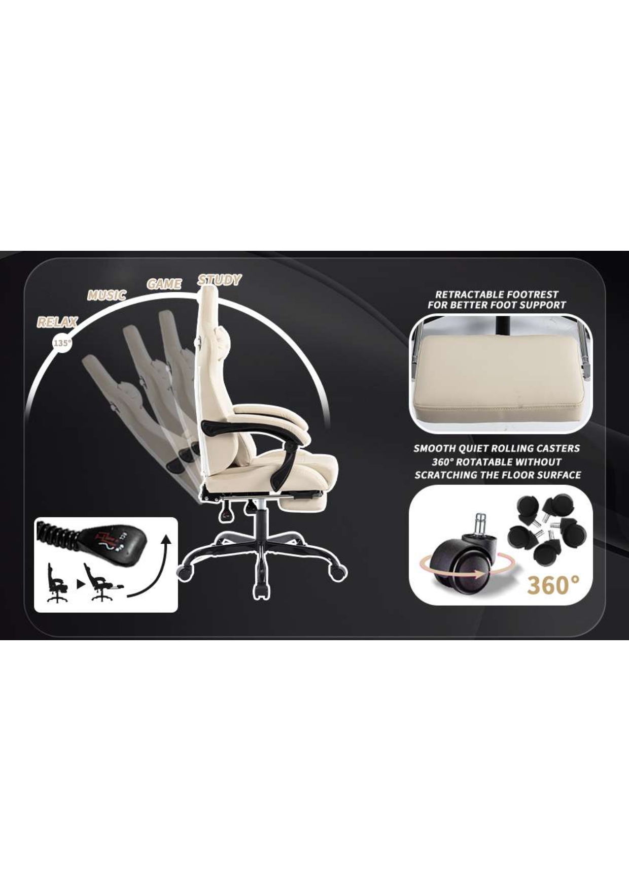
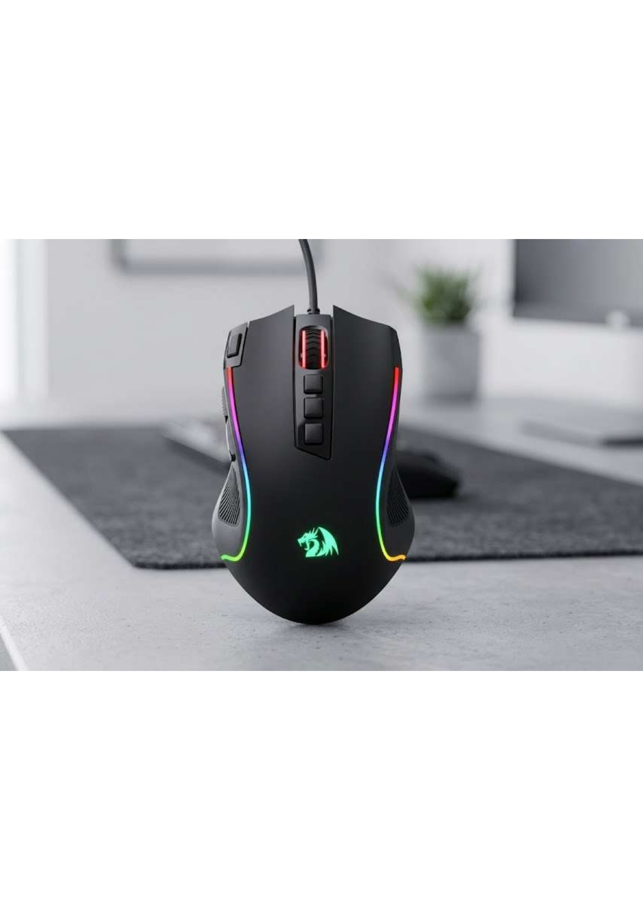
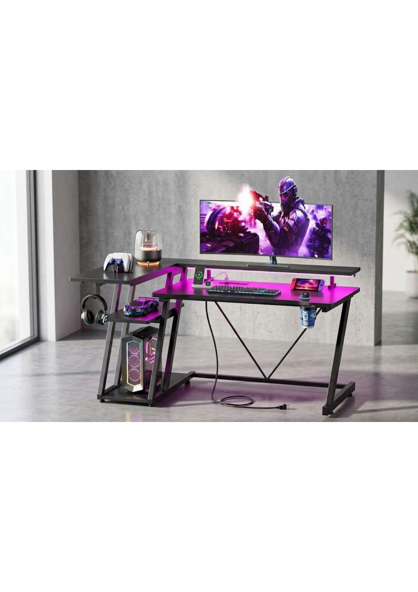

ERGONOMIC PRODUCTS

Chairs
1. Ergonomic Gaming Chairs
These chairs are designed to
provide optimal lumbar support
, adjustable armrests, and headrests
to promote correct posture
during extended gaming sessions.

Mouse
2. Ergonomic Gaming Mice
These devices are shaped
to fit naturally in the
user’s hand, reducing
wrist tension. Features
include adjustable sensitivity
, programmable buttons, and
lightweight design for precision and comfort.

Set up
3. Complete Ergonomic Setups
Bundled packages that include chairs,
desks, and accessories designed to
work together for a fully optimised
ergonomic gaming environment.
|
 Chairs 1. Ergonomic Gaming Chairs These chairs are designed to provide optimal lumbar support , adjustable armrests, and headrests to promote correct posture during extended gaming sessions. |
 Mouse 2. Ergonomic Gaming Mice These devices are shaped to fit naturally in the user’s hand, reducing wrist tension. Features include adjustable sensitivity , programmable buttons, and lightweight design for precision and comfort. |
 Set up 3. Complete Ergonomic Setups Bundled packages that include chairs, desks, and accessories designed to work together for a fully optimised ergonomic gaming environment. |